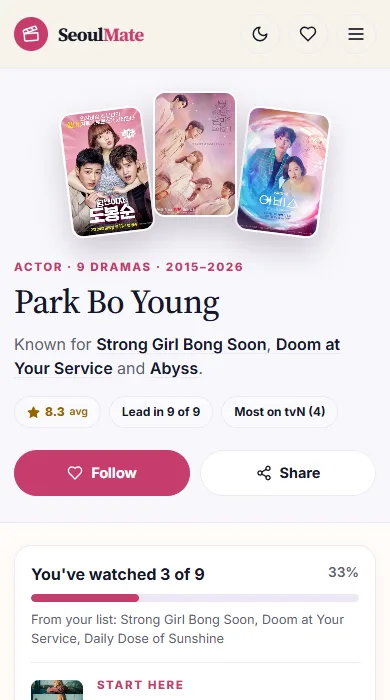
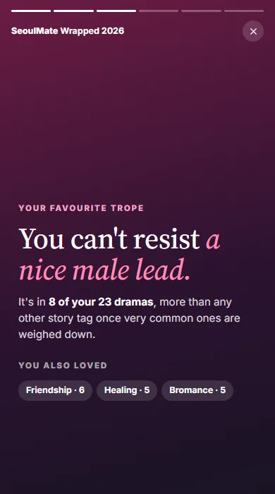
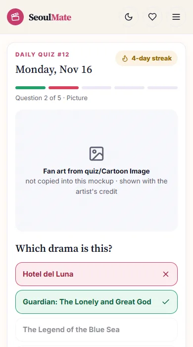
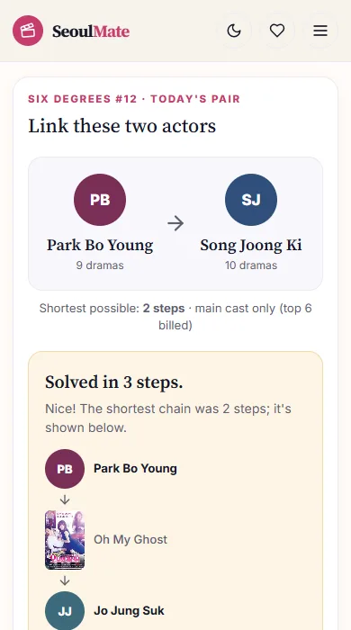
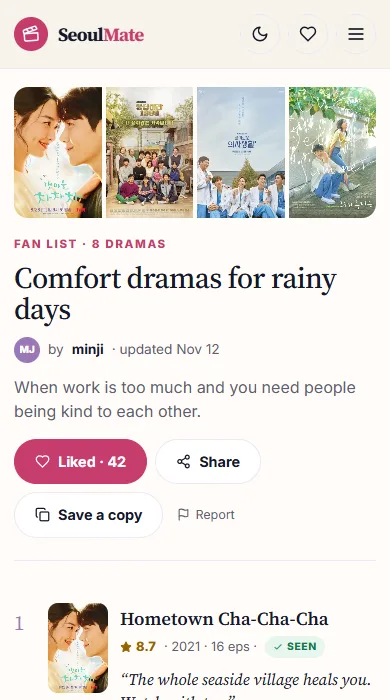
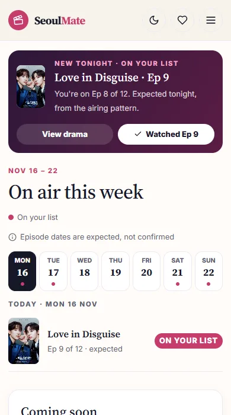

SeoulMate fan features: proposals
Six features that give fans something to do besides searching. Each page shows today's site next to the proposed design, at the same scale, on a phone and on a computer, in light and dark. The mocks use the site's real compiled CSS, header and drama cards, real posters, and real catalog data (titles, ratings, casts, airing dates). Buttons above each mock switch states, and most buttons inside the mocks work. Written plan: docs/plans/FAN_FEATURES_PLAN.md.

1. Actor and writer pages
A page per person: all their dramas, how many you've seen, where to start, who they work with, and Follow.
Open →
2. K-drama Wrapped
Your year in six slides (dramas, hours, top actor, favourite trope, genres) and an image to share.
Open →
3. Daily "Guess the drama"
Five picture questions a day, the same for everyone, with a streak and a shareable score.
Open →
4. Six degrees of K-drama
Link two actors through shared dramas in as few steps as possible. Daily pair plus free play.
Open →
5. Fan lists
Named lists with a note on each drama, private or public, likeable and shareable.
Open →
6. Airing now and calendar
This week's episodes, your dramas highlighted, badges on My list, and a private calendar link.
Open →
7. Cast photos
Actor photos and character names on drama pages, from TMDB, with the full cast one tap away.
Open →Suggested order
- Actor pages: the data is ready, fans browse by actor more than anything else, and about 1,400 pages help Google traffic. Fix duplicate actor spellings first.
- Wrapped: next, so it's live by 1 December. It needs episode progress saved in the database, which the airing calendar also uses.
- Daily quiz: the strongest reason to come back every day. Poster close-ups solve the small picture supply.
- Six degrees: a small add-on once actor pages exist.
- Fan lists: community content and search pages; needs nothing else first.
- Airing calendar: last, because it depends on a scheduled scraper.
Shared groundwork
| Change | Used by | Kind |
|---|---|---|
| Merge duplicate actor spellings (issue #4 item 2) | Actor pages, Six degrees, Wrapped's top actor | Data |
watchlist_items.episodes_watched (episode tracker saved to the database instead of the browser) | Wrapped, Airing badges | Migration + watchlist PUT |
| Scheduled catalog refresh | Airing calendar; also keeps new dramas in search | Ops (open item) |
| None of the six changes search or ranking | — | No evaluator re-run needed, except the one-field Discover addition for actor pages (results unchanged) |
Questions for you
- Do you agree with the order, or should Wrapped go first because of the December date?
- Which features should I turn into real code first? Each page ends with its own "To decide" questions.
- Is this mockup style what you wanted for future designs?
How these are made: screens/*.html are the mocks (they load assets/site.css, a copy of the site's compiled CSS from next build, so they look exactly like the site). today/ holds screenshots of the live site taken on 2026-11-16. posters/ holds small copies of real catalog posters. Open any .html file in a browser; the fonts load from Google Fonts.